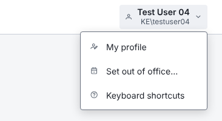
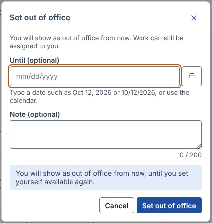

You show as out of office from now. Work can still be assigned to you.
Menu: identity and current status first (the phone shows only an icon today, so there the menu is the only place to see who is signed in and whether they are out). Dialog: presets cover the common 10-second case; the date and note stay; From and work hours stay on the page.